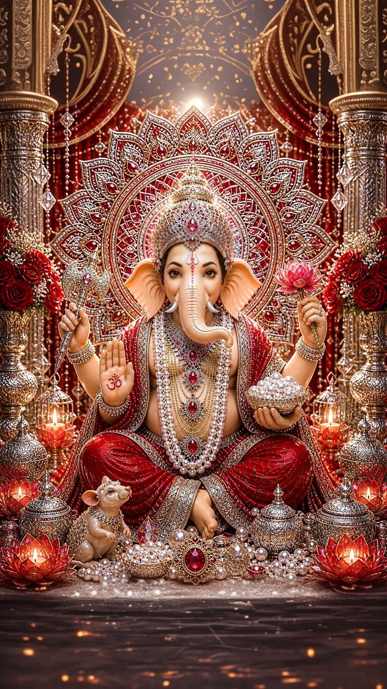
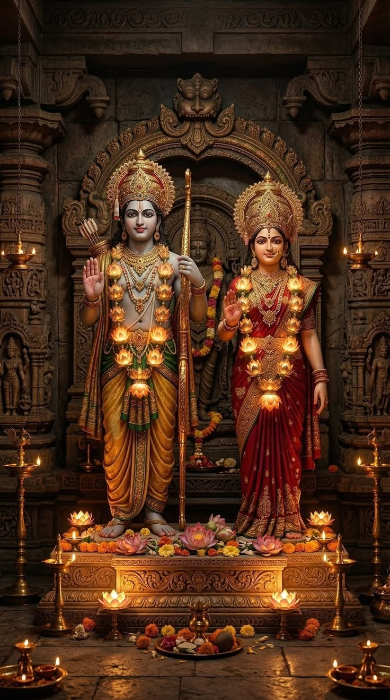
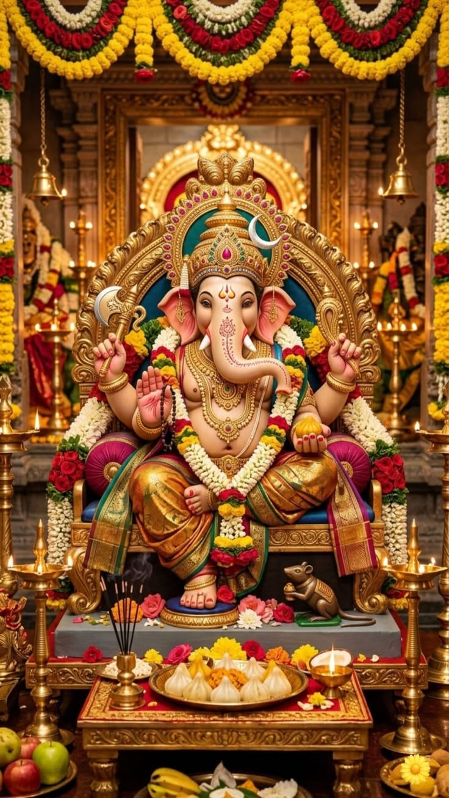
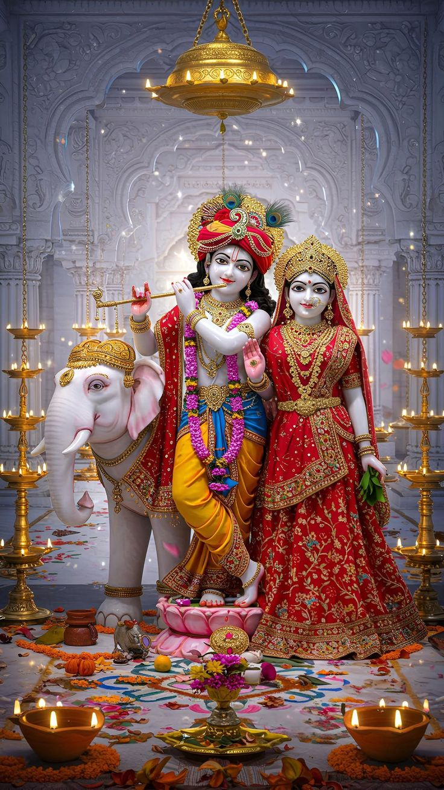
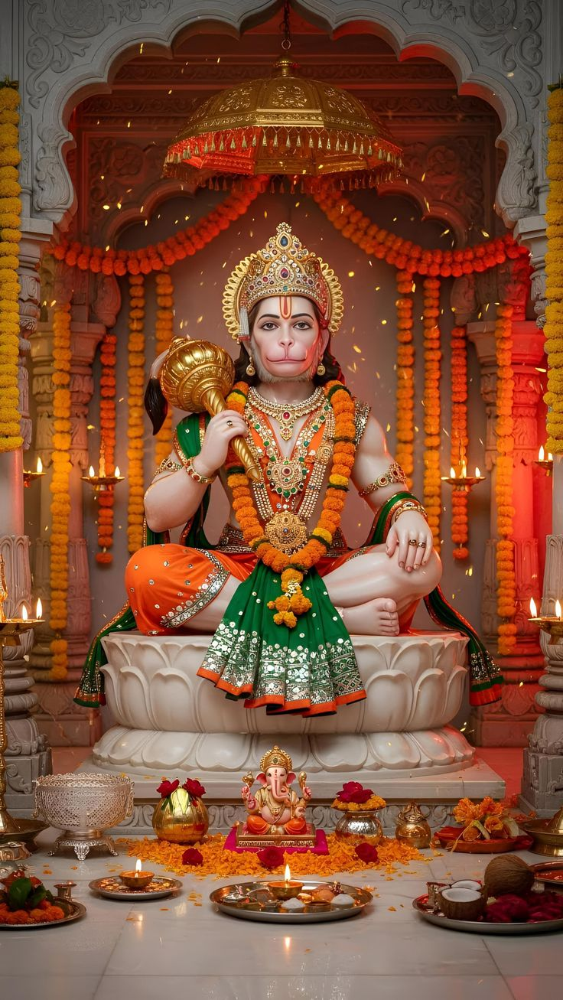
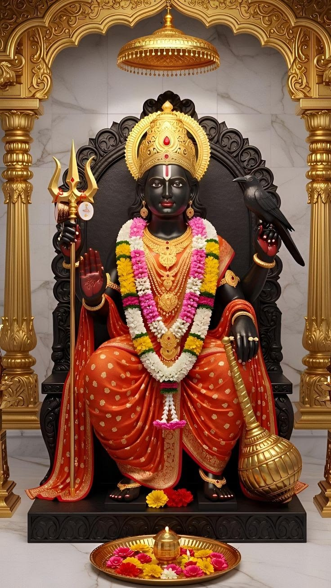
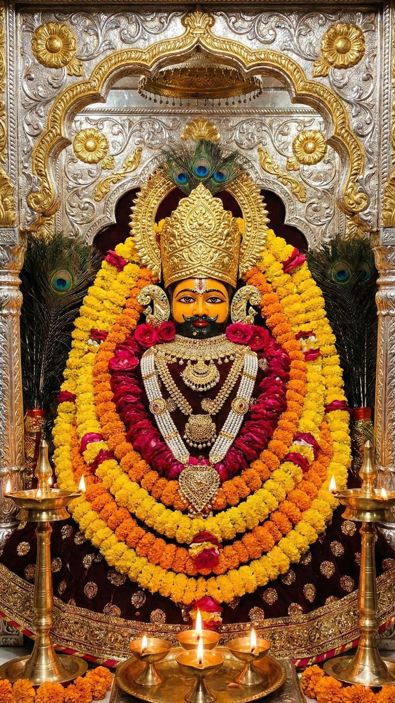
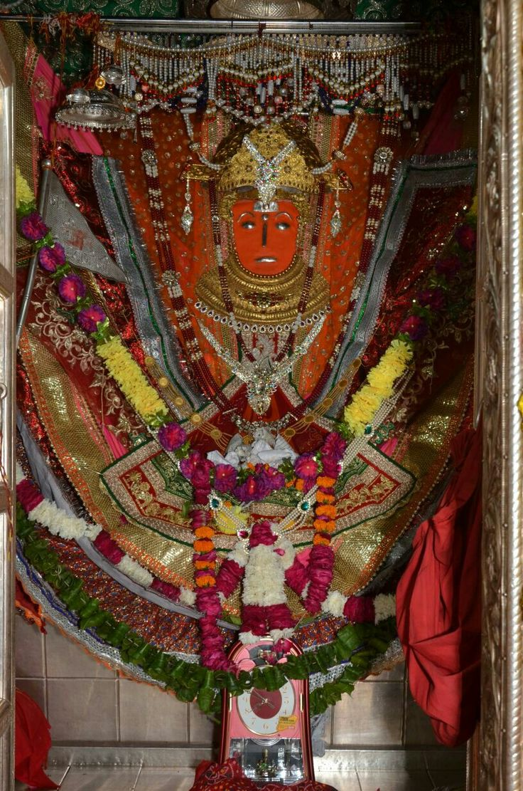
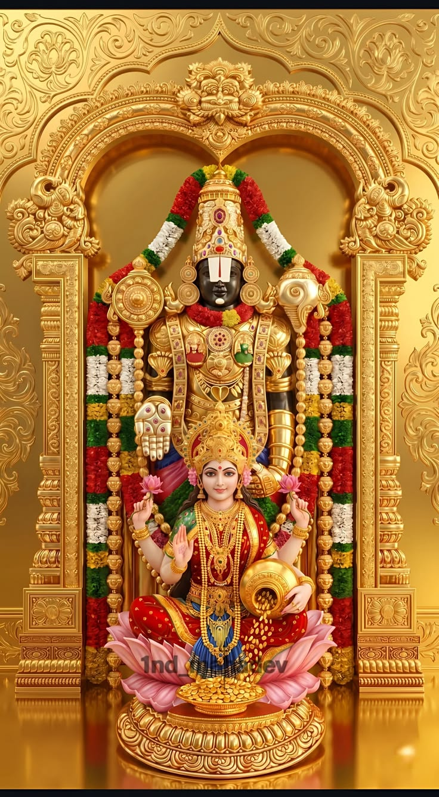

📍 उत्तराखंड
📍 उत्तराखंड
श्री केदारनाथ ज्योतिर्लिंग
हिमालय की गोद में स्थित भगवान शिव का यह परम पवित्र धाम 12 ज्योतिर्लिंगों में से एक है।...

गणेश जी







शुभ मुहूर्त, तिथि, नक्षत्र और राहुकाल
---- (Day)
Loading...
Loading...
-
Loading...
Loading...
-
घर बैठे देश के सभी प्रसिद्ध पवित्र धामों के दिव्य दर्शन, संपूर्ण आरती संग्रह, और लाइव धार्मिक अपडेट्स का आनंद लें। यह ऐप आपकी दैनिक पूजा और आध्यात्मिक यात्रा को सरल और मंगलमय बनाने के लिए समर्पित है।
समस्त बाधाओं के निवारण और नवग्रह शांति हेतु विशेष मंत्र...
मंदिर की सही दिशा, महत्त्व, 20+ वास्तु नियम व पूजा विधि...
सुरक्षा के 30 शक्तिशाली मंत्र, उपाय, क्या करें और क्या न करें...
सुबह-शाम पूजा का सही तरीका, दीपक की दिशा व 20+ नियम...
बच्चों और घर को नजर से बचाने के 30 अचूक टोटके व मंत्र...
तिजोरी की सही दिशा, कर्ज मुक्ति और बरकत बढ़ाने के 30 नियम...
शनि, राहु, केतु और कालसर्प दोष से बचने के 30 महाउपाय...
तुलसी में जल कब चढ़ाएं, परिक्रमा और बरकत बढ़ाने के 30 नियम...
सपने में भगवान, सांप, पानी या मृत व्यक्ति दिखने का क्या है संकेत...
सर्दी-जुकाम, पेट दर्द और छोटी-मोटी बीमारियों के 30 देसी उपाय...
जीवन में तरक्की, दोस्ती, और धन बचाने के चाणक्य के 30 अनमोल वचन...
चूल्हा, पानी और गैस की सही दिशा, बरकत बढ़ाने के 30 नियम...
पितृ दोष के लक्षण, शांति के उपाय, पाठ, दान और आशीर्वाद के नियम...
विस्तृत इतिहास, लाइव दर्शन और यात्रा जानकारी
📍 उत्तराखंड
हिमालय की गोद में स्थित भगवान शिव का यह परम पवित्र धाम 12 ज्योतिर्लिंगों में से एक है।...
चित्तूर जिले की शेषचलम पहाड़ियों पर स्थित यह भव्य मंदिर दुनिया के सबसे अमीर मंदिरों में गिना जाता है...
बाबा विश्वनाथ की नगरी काशी (वाराणसी) में गंगा तट पर स्थित यह मंदिर शिवभक्तों का मुख्य केंद्र है...
🙏 प्रिय धर्मप्रेमी भक्तजनों, सनातन संस्कृति और भक्तिभाव से परिपूर्ण इस पावन डिजिटल मंदिर को बिना किसी विज्ञापन के, पूर्णतः शुद्ध, अबाधित और सर्वसुविधा संपन्न बनाए रखने के लिए हमें आपके प्रेमपूर्ण और उदार सहयोग की अत्यंत आवश्यकता है। आपके द्वारा दिया जाने वाला यह छोटा सा योगदान इस पवित्र मंच के सर्वर रखरखाव, निरंतर तकनीकी उन्नयन और सनातन सेवा के इस पवित्र विस्तार को निरंतर गति प्रदान करता है।
सूची से अपनी पसंद का भजन चुनें और आनंद लें